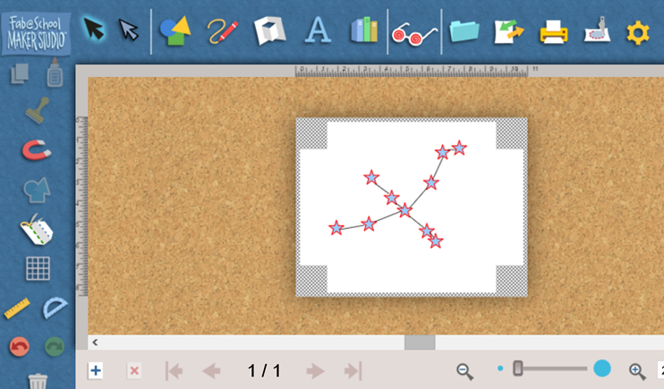
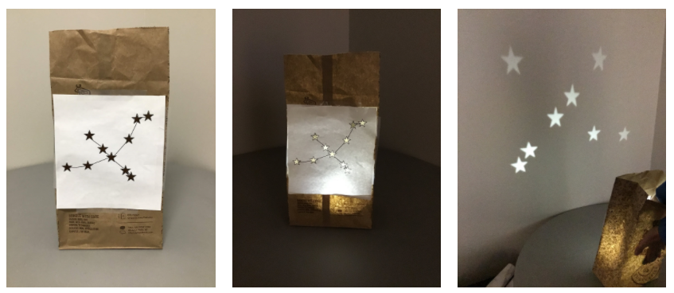

Do It! FabMaker Studio: Create Your Own Constellation
 The Challenge
The Challenge
Your challenge is to use FabMaker Studio to explore constellations and create a constellation punch-out. Then, you will use the punch-out to plot the constellation on a coordinate plane.
Project Steps
-
Pick a Constellation
-
Create the Design
-
Print the Design
- Construct the Luminary
- Plot the Coordinate Plane
Pick a Constellation
Pick a constellation from the following:
For more choices, research other constellations and choose one that you like. Use FabMaker Studio to create the constellation you chose.
Create the Design
- Log into FabMaker Studio.
- Start a New Project.
- Choose Letter paper size and leave "None" in Registration Marks. Click OK.
- Use the circle or star shape to place the stars in the constellation.
- Use the drawing tool to connect the stars and create an outline of the constellation.

Print the Design
- Click on the print button.
- Select the options for Print Cut & Fold Lines and Remove Color Fill.
- Click Save to PDF.
- Open the PDF and print to a printer in your classroom or school.

Construct the Luminary
- You can use scissors or a hole punch to cut out the stars/holes in your constellation.
- Tape or glue your design to a paper bag, or tape the sides together to form a cylinder.
- Place a flashlight, candle, or battery-powered tealight inside your luminary to project the constellation.

Plot the Coordinate Plane
Coordinate planes are helpful when showing the locations of objects, like stars in a constellation. Scientists and astronomers can study constellations on coordinate planes to see how the stars relate to one another. They can also describe where stars and constellations are located using a coordinate plane.
Let’s use the luminary to represent the constellation on a coordinate plane.

If you are using graph paper:
- Use the graph paper that you have drawn the x-axis and y-axis on.
- Lay the luminary under the graph paper.
- Trace the constellation onto the graph paper and record the locations where the luminary shines light from the constellation.
- Label the coordinate pairs of the stars in the constellation.
If you are using PDF Filler:
- Use the PDF filler link.
- Click the orange button, Get Form.
- Using your digital luminary, mark the locations of the stars in your constellation with the circle tool. You may need to make the circle smaller.
- Label the coordinate pairs of the stars using the text tool.